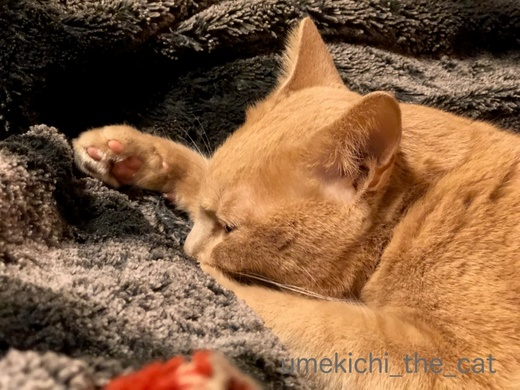
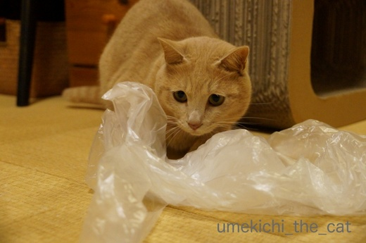
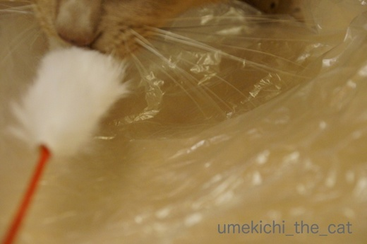
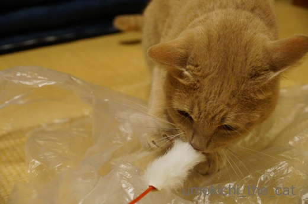
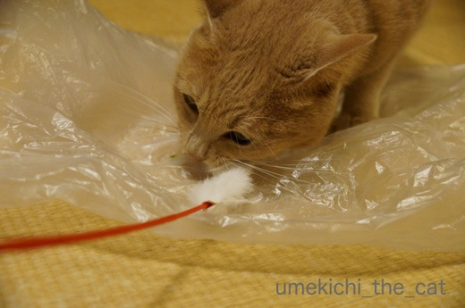
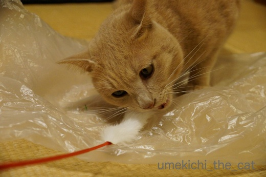
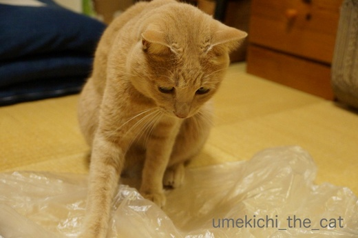
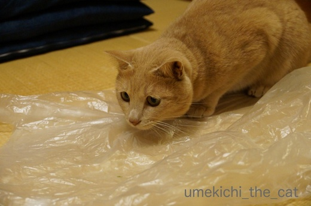

猫スイッチ、オン！ [梅吉]

野性のかけらもなくタオルをちゅうちゅうしていたかと思えば

突然入る猫スイッチ。

ばびゅ〜〜んっ！

突進しすぎーー！！

梅吉さんが狙っているのはこのいわゆる典型的な猫じゃらし。
にゃんこのいるお宅なら一家に一本お持ちではないでしょうか。
梅吉さんご愛用のが壊れたので新しいのを買ってきたら猫スイッチオン(・o・)

うさぎの毛使用とのことなので新品はかすかに動物臭でもするのでしょうか・・・

鼻にしわ寄せてがぶり付いておりますw

野性がもどってきましたか？
獲物をカミカミしている様でちょっとコワイ・・・(⌒_⌒;
渡してしまうと飲み込んでしまいそうなので適度なところで回収。

カサカサとビニール袋を絡めて遊ぶのがまたよろしい様です＾＾

お目目がキロキロしていますねーＯ(≧▽≦)Ｏ

運動不足にならない様にいっぱい走ってくださいよ♡

カフェオレ色の梅吉

梅吉 2023年8月10日 永眠


梅吉と出会った譲渡会

犬猫の理由なき殺処分ゼロ
妄想広告
UMEKICHI 光

爆発的に早い！
時々攻撃的！
Thanks to Mr.Boss365
爆発的に早い！
時々攻撃的！
Thanks to Mr.Boss365

梅吉さんのお目目キョロキョロ特に横目が面白い~~!
またたびキャンディの情報ありがとうございました。昨日うちにも届きました。5分でデロデロになってもう汚ったないのなんのって、いやーー!! でも何故か2日目の今日はもう人気なし。一日でしゃぶり尽くしちゃったのかしら???
by zombiekong (2017-12-12 16:14)
暖かいところで寝てばかりいたくなる寒さですよね～。
でもそれじゃ～運動不足だし、猫さま元気が余っちゃう。
猫スイッチオン！ですね♪
梅吉さん、お目々左右にキョロキョロ、可愛い～！
ビニール袋、なんであんなに好きなんでしょ。
羽根やウサギの毛のおもちゃは、そそられるんでしょうね～＾＾
またたびキャンディ、ひょっとしたら他の子の唾液の匂いが強くなったから、とか？＾＾；
by sana (2017-12-12 18:08)
梅吉さん新しい猫じゃらしでスイッチオンですね！
冬は運動不足にならないようにするのも結構大変ですね(^^)
by ma2ma2 (2017-12-12 20:29)
梅吉さん、チロリ横眼がかわいい～(*^▽^*)
獲物にロックオンしたときのお顔大好きです♪
うちのガブリエル、まだ1歳にならない頃、夜中に猫じゃらし1本食べちゃったことあります。朝ごはん食べたあとに全部吐いたので助かりましたが、依頼オモチャは別室の押し入れに収納。
遊ぶ時しか出しません^^;
by ゆきち (2017-12-12 21:09)
構えた時のチラ見がかっこいい♪ ^^)
by yes_hama (2017-12-12 21:48)
お目目キョロキョロ、いいですね～＾＾
うちのあかりも、このフワフワがついた猫じゃらしを
今は2種類持ってるのですが、100円で買ったほうは
見向きもせず、羊毛って書いてあった高いほうは
親の仇かと思うくらい、激しく食いつきます(;^ω^)
やっぱり動物臭とかあるのかな？
by マーヤ (2017-12-13 00:56)
これはかなりの本気モードですね。
選んだおもちゃを気に入ってくれると嬉しいですね＾＾
by ぽちの輔 (2017-12-13 06:44)
うちもこのじゃらしは大人気です=(^.^)=
えぇ、私が振っててもちょっとだけは相手をしてくれるくらいお気に入りです(⌒-⌒; )
ただ、うちは寝技が多いので、梅吉さんみたいにバビューンって飛んできてくれないんですよねぇ(*_*)
おかげで運動になってるのか微妙w
umekichi
by ニッキー (2017-12-13 07:47)
ほのかな動物臭に狩猟本能が目覚めましたね！
必死な姿はライオンを彷彿とさせます！(@_@)
by よーちゃん (2017-12-13 08:40)
ほんまもんの動物の毛は食いつきが違いますよね。野生が目覚めた梅吉君の顔凛々しいですね！
by palpal (2017-12-13 16:14)
タオルはちゅうちゅう♪お目目はキロキロｗ
表現が可愛い(≧▽≦)
新しいおもちゃを奥歯でカミカミする姿。
肉食だなって感じだよね・・・。
家のタラもこの奥歯カミカミであらゆるものの破壊に日々取り組んでいる模様。
今日もせっせと獲物を探しています・・・(^-^;
by emi (2017-12-13 17:36)
ピンクの肉球が良いですね〜
赤ちゃんのような寝顔。
勇ましい顔も素敵です。
by kiki (2017-12-13 21:44)
ビニール袋のあの音が好きなんですよね。
ユキも飛んできます(^^;
そばに来て欲しいときは、その手をよく使います(^^)
by riverwalk (2017-12-13 23:35)
梅吉君、たのしそうだねー^^
あたらしい猫じゃらしよかったね。
うちにももちろんコレ系のおもちゃはありますよ^^
うみも運動させたいんだけど
うみと遊ぶとあおが興奮しておもちゃを奪い、それを見たうみが冷めて居なくなるorz
こうしてうみは、遊ばない子になりました(ToT
by リュカ (2017-12-14 10:41)
ちゅうちゅーからの眉！たまりませぬ(＞▽＜)きゃー♪
by Ginger (2017-12-14 13:09)
zombiekongさん＞
またたびキャンディはリュカさんからいただいたのですが
「慣れちゃわない様に出しっぱなしにしない事」と言われてました〜。
暫くしまっておくとまた人気復活になるかもしれませんよ＾＾
sanaさん＞
あったかいところで（梅吉の寝るところに湯たんぽ入れています＾＾）
ぐっすり寝ているせいか起き出したら元気一杯で・・・^^;
「うんどうぶそく かいしょうするでー」と走り回っていますw
またたびキャンディはもったいぶって時々出すのが
人気持続の秘訣の様ですよ〜＾＾
ma2ma2さん＞
寝ている時間が長〜いので起きると元気一杯なんですが
確実に運動量は減っています。
太らせない様に気をつけなきゃ！って思ってます（自分も・・・^^;）
ゆきちさん＞
梅吉もおもちゃ食べちゃったことあります！
食べたことにも気づいていなくて吐いてから「食べたんだ・・・」と
青くなりました^^;
我が家も危険なおもちゃは梅吉が開けられない引き出しの中に入っています。
出先で「ちゃんとしまって来たよね・・・」と
気になってしょうがない時があって困ります( ；∀；)
yes_hamaさん＞
流し目で狙っていますよね＾＾
梅吉、何を目指しているんだーーーー！！！
マーヤさん＞
なんと！羊毛バージョン・・・
調べたら、ありますね〜！！今度はその親の仇を買ってみますね＾＾
ゆきちさんのブログによると「オジカの毛」というのも
あるらしいですよ・・・
にゃんこのおもちゃは奥が深いですねー。
ぽちの輔さん＞
これはイケる！と思って買ったのは（高い）ダメで
安い普遍的おもちゃを気に入ると言う・・・^^;
楽しんでくれれば飼い主は嬉しいのですけどね＾＾
by ちぃ (2017-12-15 19:18)
ニッキーさん＞
寝技・・・ (≧ω≦｡)
ひねり運動が多いと思われるのでウエストがくびれたり・・・
してないですよねーーー！！！
楽しく遊んでいただければ良いと言うことで(^_－)☆
よーちゃん＞
そうそう！梅吉は毛色のせいもあるのかライオンっぽい時があります。
だらしな〜く寝そべっている時もライオンそっくりです(≧ω≦｡)
palpalさん＞
目の色なんか変わっちゃって凄いですよねー！
でもそんなむき出しの野性のあとにもちゅうちゅうするところが
飼い猫ですよね^^;
emiさん＞
なんだかね、梅吉に関しては言葉をふたつ繋げたくなります。。。
トイレのドアの前で待っててくれると
「待ち待ちでしたかー！」とかね。自分でもアホや、って苦笑です^^;
タラくんも破壊王でしたか！
梅吉もなんでもカミカミ、ガブガブなのでボロボロで人様に
見せられないものがたくさんあります。
ベッドのマットレスなんて酷いのよ・・・（涙）
by ちぃ (2017-12-15 19:44)
kikiさん＞
赤ちゃんの様な表情からハンターへ・・・
切り替えの早さも猫様の特徴です＾＾
riverwalkさん＞
ビニールのカサカサ音、
梅吉も眠っていたのに起き上がってきますよー＾＾
あの音の何があんなに猫を引き寄せるのでしょうね。。。
リュカさん＞
うみちゃんなんてクールな・・・
でもめっちゃ盛り上がっているヒトとみると
すーーっと醒める気持ち、わからなくもないかな^^;
Gingerさん＞
梅吉、、眉で語る漢です！
by ちぃ (2017-12-15 20:58)